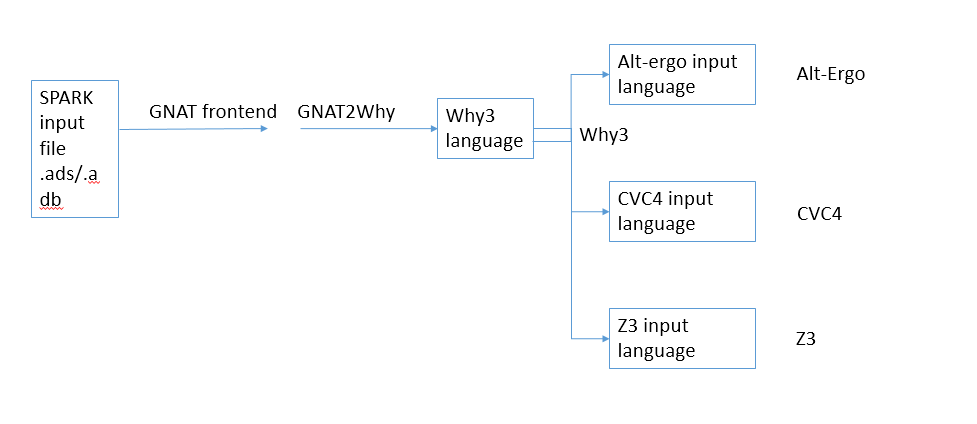

SPARK architecture, quality assurance and maturity¶
Development Process and Quality Assurance¶
The SPARK development process and quality assurance are following the Adacore Quality Procedures in place for all development at AdaCore. This includes:
- The use of a report tracking system;
- Mechanisms for detecting and fixing defects;
- The usage of repositories and configuration management, the use of continuous integration technology, the stringent requirements on check-ins of source changes;
- The process for implementing new functionality;
- The process for maintaining user documentation;
- Ensuring quality of sources and technical documentation;
- Preparation of releases
As an extension to Chapter 2, section “AdaCore internal testsuite”, SPARK contains its own testsuites:
- The SPARK main testsuite: This testsuite contains 1700 tests. These tests are specifically targeted at the SPARK software and cover typical use cases, often represented by code sent to us by customers, as well as specific features of the SPARK software.
- The ACATS testsuite in SPARK mode: A selection of the ACATS testsuite mentioned in the AdaCore Quality Procedures for the compiler is also used to test the SPARK tools.
These tests are run on various occasions (see also Chapter 2 of the Adacore Quality Procedures): * During nightly testing, once with assertions enabled, once without (the actual SPARK product); * After every check-in, during continuous integration; * To test a patch before check-in using the Mailserver technology.
Structure of the SPARK Software¶
At a high level, SPARK reads source files in the Ada programming language, with some annotations specific to SPARK, processes them, and in the end issues a report about errors found and proved or unproved properties. Looking more closely at how this is achieved, one can see this high-level structure of SPARK:
The development of the GNAT front-end and GNAT2Why components entirely follows the procedures outlined in AdaCore Quality Procedures and the previous section. The other components, however, are mostly developed by third parties. Their development process and the relationship to AdaCore and Altran will be outlined below.
For the nightly testing of SPARK, the GNAT and GNAT2Why components are updated every night according to the changes made during the day by AdaCore and Altran developers. The other tools, however, contain also check-ins by other persons. We update these tools in a controlled way, and after careful testing of the consequences. In other words, a check-in made e.g. to Z3 at some specific date, will not be part of the SPARK package of the same day, instead it will be integrated into SPARK after some time and after thorough testing in the SPARK environment.
GNAT front-end¶
SPARK shares its front-end (parsing and semantic analysis) with the GNAT compiler technology, which is very mature and has been used in countless projects for the last 20 years. The GNAT front-end is developed by AdaCore and follows the AdaCore quality procedures.
GNAT2Why¶
This part of SPARK serves two purposes:
- Implement Flow Analysis, the part of the SPARK analysis which detects uninitialized variables, and computes and checks the use of global variables and parameters.
- Translate the Ada source code to the Why language, for further processing by the Why3 tools. GNAT2Why is developed by AdaCore and Altran and follows the AdaCore quality procedures.
Why3¶
This part of SPARK takes the information in the Why language produced by GNAT2Why, translates it further into a format suitable for SMT solvers such as Z3 and CVC4, and runs these tools. The results are reported back to gnat2why.
History: Started around the year 2000 by Jean-Christophe Filliâtre as “Why” (see Jean-Christophe Filliâtre. Why: a multi-language multi-prover verification tool. Research Report 1366, LRI, Université Paris Sud, March 2003), it has undergone a number of redevelopments until its current version Why3 (since 2010).
Track record: Apart from SPARK, it is used by Frama-C, Atelier B, and other program verification tools.
Relationship with AdaCore/Altran: The Inria team around Why3 has strong ties with AdaCore and Altran. A number of research projects have been and are being carried out in collaboration with this team. This includes the Hi-Lite project, which led to the current version of SPARK based on Why3, and the still ongoing project SOPRANO and joint laboratory ProofInUse. In addition, while Why3 is mainly developed at Inria, AdaCore and Altran have made important contributions to the technology, such as the so-called fast-WP, a more efficient implementation of the main algorithm of Why3, and the why3server, a more scalable method of running external tools such as SMT solvers.
- Main developers: Inria research institute
- Main website: http://why3.lri.fr
- Version Management: Git
- License: Open Source, LGPL 2.1
- Public mailing-list: why3-club@lists.gforge.inria.fr
- Bug tracking: https://gforge.inria.fr/tracker/?group_id=2990
Alt-Ergo¶
History: Started around the year 2005 at Inria by Sylvain Conchon and Evelyne Contejean as “Ergo” (see CC(X): Efficiently combining equality and solvable theories without canonizers. Sylvain Conchon, Évelyne Contejean, and Johannes Kanig. SMT Workshop, 2007). Starting from 2013, developed and distributed mainly by OCamlPro. Since then, OCamlPro issues every year a private release and a public release (lagging one year behind the private release). SPARK uses the public release of Alt-Ergo.
Track record: Apart from SPARK, it is used by Frama-C and Atelier B. In particular, used by Airbus for the qualification DO-178C of an aircraft [10].
Relationship with AdaCore/Altran: AdaCore and OCamlPro collaborate in the SOPRANO. AdaCore has contributed some minor changes to Alt-Ergo, including a deterministic resource limiting switch.
- Main developers: OCamlPro
- Main website: https://alt-ergo.ocamlpro.com/
- Version Management: Git
- License: CeCill-C (GPL compatible)
- Public mailing-list: alt-ergo-users@lists.gforge.inria.fr
- Bug tracking: https://github.com/OCamlPro/alt-ergo/issues
Z3¶
History: Started around the year 2007 at Microsoft Research by Leonardo de Moura and Nikolaj Bjørner (see Leonardo de Moura and Nikolaj Bjørner. Efficient E-Matching for SMT solvers. In Automated Deduction - CADE-21, 21st International Conference on Automated Deduction, Bremen, Germany, July 17-20, 2007, Proceedings, volume 4603 of Lecture Notes in Computer Science, pages 183-198. Springer, 2007). Released to open source under a very permissive license in 2015.
Track record: Apart from SPARK, used by Dafny and PEX projects inside Microsoft. Has won the SMT competition several times in several categories.
Relationship with AdaCore/Altran: AdaCore and Altran have provided bug reports, feature requests and small fixes to the Z3 team, in particular related to a deterministic resource limiting switch.
- Main developers: Microsoft
- Main website: https://github.com/Z3Prover/z3
- Version Management: Git
- License: MIT License
- Stackoverflow community: http://stackoverflow.com/questions/tagged/z3
- Bug tracking: https://github.com/Z3Prover/z3/issues/
CVC4¶
History: CVC4 is the fourth in the Cooperating Validity Checker family of tools, which dates back to 1996, but does not directly incorporate code from any previous version. CVC4 development started in 2012.
Track record: Very good results in various SMT competitions. Used in TNO tool.
Relationship with AdaCore/Altran: AdaCore and Altran have provided bug reports, feature requests and small fixes to the CVC4 team, in particular related to a deterministic resource limiting switch.
- Main developers: New York University
- Main website: http://cvc4.cs.nyu.edu/web/
- Version Management: Git
- License: Modified BSD License
- Mailing List: cvc-users@cs.nyu.edu
- Bug tracking: http://cvc4.cs.nyu.edu/bugs/